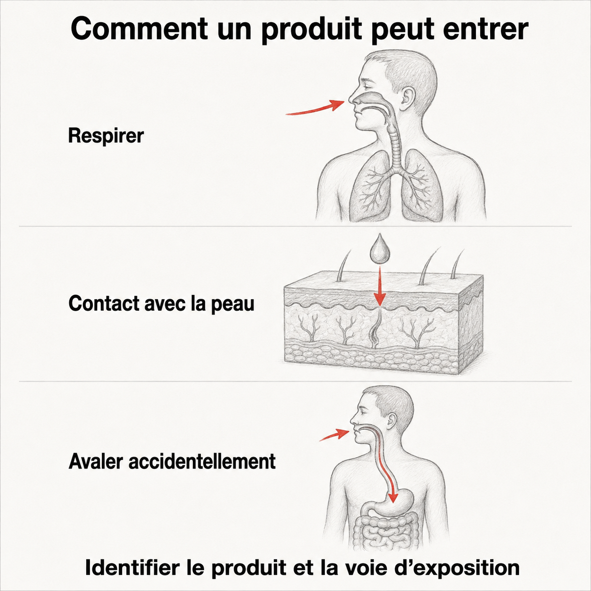

Voies d'exposition
La voie d’exposition décrit comment un produit entre en contact avec le corps ou y pénètre. Un même produit peut emprunter plusieurs voies.
Situer les voies sur le corps
{kind=link}

Toucher l'image pour l'agrandirLe dessin situe trois voies, sans toutes les représenter. Un contact avec la peau ne signifie pas qu’un produit la traverse : cela dépend de la substance et des conditions d’exposition.
Lire les voies en texte
- Inhalation : respiration d’air contenant des poussières, fumées, gaz ou vapeurs.
- Peau et yeux : contact pouvant provoquer un effet local ; certaines substances traversent aussi la peau.
- Ingestion : contamination portée à la bouche, notamment par les mains, les aliments ou les boissons.
- Injection : pénétration à travers la peau, par exemple lors d’une piqûre contaminée.
Source : CCHST — Voies d’entrée des produits chimiques. Vérifiée le 6 septembre 2026 pour cette section uniquement. Schéma conceptuel, pas un outil de diagnostic.
Pour une même tâche, considérer toutes les voies possibles. Identifier le produit et consulter sa fiche de données de sécurité permet de préciser l’évaluation ; le dessin ne permet pas de choisir à lui seul une protection.
Ébauche créée pour servir de cible aux liens internes. À étoffer.
Pages qui pointent ici (6)
- ADME, cheminement des contaminants dans l'organisme Toxicologie
- Amiante Toxicologie
- Articles internes Toxicologie
- Solvants Toxicologie
- Surveillance biologique des métaux en mine Toxicologie
- Toxicologie industrielle Toxicologie